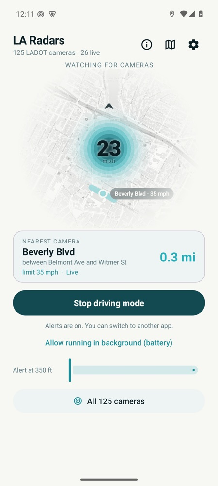
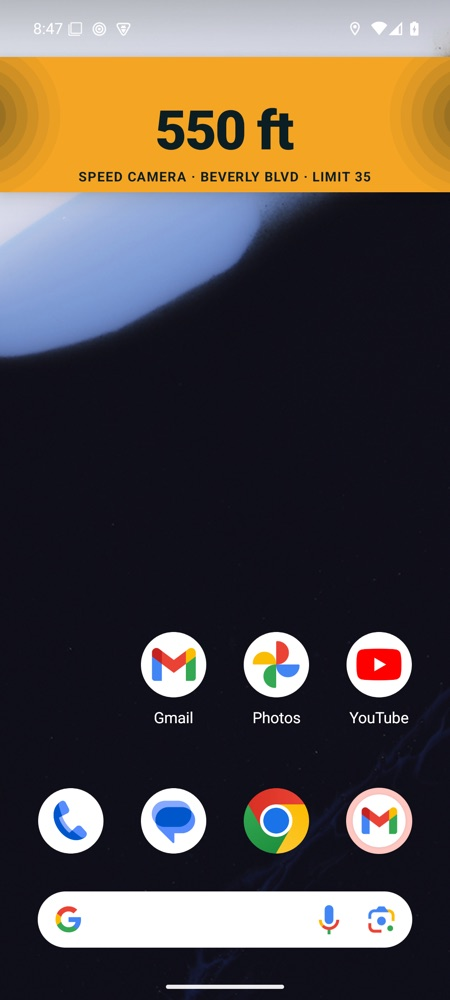
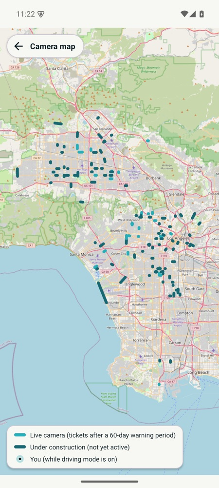
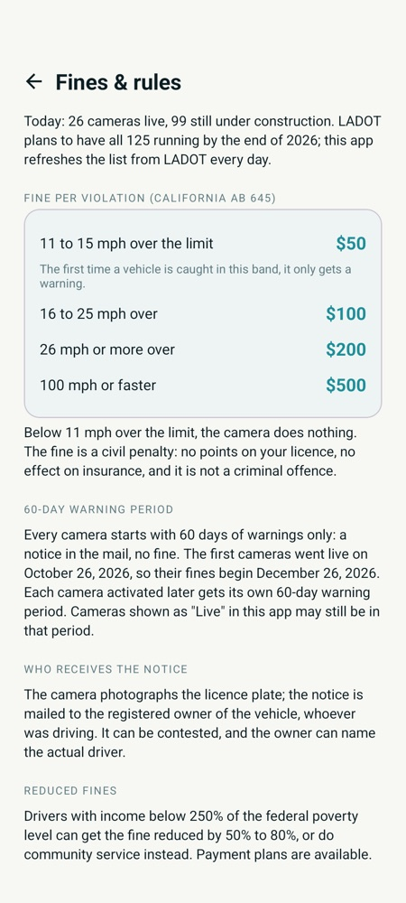

LA Radars watches the city's new speed cameras for you and warns you in time, even while Google Maps, Waze or your music is on screen.
Download for AndroidFree · no account · installs in one tap outside the Play Store · updates itself
iPhone version in the works.
The alert bar appears on top of whatever app you're using, counts the distance down live, and turns red when you're close or over the limit.
All 125 LADOT speed safety systems, with the exact street segment, speed limit and live / under-construction status. Refreshed from the city every day.
Starts driving mode when your phone detects you're driving or when your car's Bluetooth connects. A short confirmation lets you know it's watching.
No alert for a camera on a parallel street or behind you. Alerts are muted on freeways, where there are no cameras but plenty of camera streets underneath.
“Speed camera in a quarter mile, limit 35.” Then halfway, zone entry, and “camera passed”. Beeps while you're over the limit in the zone. Each one can be switched off.
Miles or kilometres. Alert distance from 100 m to 1 km. Live map behind the radar, heading-up, with the nearest camera drawn on it.
Your location never leaves the phone. No account, no tracking, no ads. The app only talks to the internet to fetch map tiles and the daily camera list.

Driving mode

Alert over any app

All 125 on a map

Fines & rules
Los Angeles switched on its first speed safety cameras on October 26, 2026 and plans to have all 125 running by the end of the year. Each camera starts with a 60-day warning period, then the notices in the mail become fines. They're civil penalties: no points, but they add up fast. One avoided ticket pays for a lot.
Android 8 and newer · about 6 MB · new versions arrive inside the app